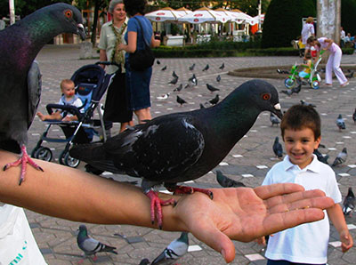

Original Poetry by Jean Arthur Jones
Edited and Published by Bruce Martin Whealton, Jr. of Future Wave Designs - Web Development, App Development, Web Hosting, Web Design
Copyright © 2012 by Bruce Whealton and Word Salad Publications
http://wordsaladpoetrymagazine.com
All rights reserved.
No part of this publication can be reproduced or transmitted in any form or by any means, electronic or mechanical, without permission in writing from Bruce Whealton or Jean Jones.
Published by Bruce Whealton
I first started this publication on the web using a wiki - just a fancy word for a software tool that makes it easy to create new pages. This book has taken probably a year to complete. I fear that my friend, Jean, may have thought it would never be completed.
Let's talk about me and this book and how it came together. Jean had asked me to pick some of his best poems and to publish them. I have been publishing poetry on the web since 1995. Or was it just yesterday? Has it been so long, these years since I first met Jean in 1992, half a lifetime ago? Perhaps there is value in knowing who I am in coming to understand this publication. There were so many poems by Jean from which to choose in coming up with a book entitled "The Best Poetry of Jean Jones Over The Years." There is a great deal of purpose in the choice of poems and the order in which they appear in this publication. They are not in any kind of chronological order in terms of when they were written or when they were first published elsewhere. While I cannot articulate why I chose these particular poems or the exact order of them, I can say that there was a purpose to these decisions.
I think it is interesting, the times of miscommunication... when Jean might ask for feedback on his poems and then a few poems here and there might just not do much for me. However, what is amazing, is for Jean to conclude that I was suggesting or ever would suggest that I am not an admirer of his talents and his writing, or to think I am not a fan. I have said elsewhere that Jean is one of the few, very few, poets I would want to listen to read for one hour or more. I have to thank Jean for his advice on writing, which included the word "honesty" - see more about this below. That is what I am offering here, honesty.
So much has happened in the year or so that this poetry collection has been in the works. I got married for the first time in my life. I lost one of my best friends, who died before his time. I handled that by drinking and missed his funeral - a shame I felt that his family didn't see me at the funeral. He was a mutual friend of Jean and me, named Thomas Childs. While, I have been a fan of Jean's Angel of Death, series of poems, I also did not want this collection to be overly focused on death. A recent collection of his, edited by a mutual friend, Scott Urban, is appropriately titled "Post Mortem." I was able to take a couple poems from that for this collection, including poems that I did not think of as being about death and loss. I have to point out that in addition to our losing a good friend, recently, Jean lost his mother.
In this past year or two years, I've had to focus on matters of income. It seems that whatever I do, whatever my focus is, I get totally engulfed in the pursuit. Not long ago, it was the effort of trying to establish myself as a poet, that engulfed my attention. However, these past two years or so, having realized that poetry would not offer an income, I turned to Web Development and programming, building a business with these skills and expanding my skills.
I have asked myself, can a person who gets away from writing poetry, really define him/herself as a poet? Jean and I have worked on Word Salad Poetry Magazine for a number of years, and I've even let that slide in terms of publishing it on schedule as had been the case previously. However, I haven't wanted to give it up. In one form or another, poetry and writing has defined me. I think reading poetry can serve as a great source of inspiration, if it's just right and touches you. I hope you, the reader, will be similarly touched by the writing here.
This has not been the first attempt to put together and publish a collection of the best poems by Jean Jones. A few years back, Ryan David Miller was given a large stack of poems written by Jean Jones going back to his days in his graduate school writing. As stated elsewhere, Jean received a M.F.A. degree in creative writing from Bowling Green State University, this was after he received his B.A. in English from the University of North Carolina Wilmington.
I would like to introduce how I am approaching this book. I am relying upon my own experiences - both my experiences as a writer, poet and editor and my experiences with Jean Jones and having heard, read, and published his poetry over the past nearly 2 decades, nearly half our lifetimes. I have also worked with Jean Jones as co-editor for Word Salad Poetry Magazine and have offered my own feedback on his poems from time to time, as well as benefited greatly from his feedback on my own writing. Obviously this will be subjective, as it will be my ideas about what is the best poetry by Jean Jones. I have made an effort to get access to various poems to which I did not have access previously. While I will group many poems based on the collections to which they belong, e.g. the Angel of Death collection, I will also attempt to present different styles of poetry and a different approach to writing poetry as I have observed the poetry of Jean Jones over the years.
I first met Jean Jones, in April of 92, some nineteen years ago. Hard to believe... I had just moved to a new city, Wilmington, NC. I was young and unsure of myself, like all poets starting out and daring to share their words with others. I had seen an advertisement in the paper for an open-mike poetry event at the Coastline Convention Center and Jean was the contact person listed. So, that was when my exposure to the poetry of Jean Jones began.
Back then, I remember thinking that his poems, at the time, were a combination of being hypnotic and mesmerizing and at the same time they were quite complex, in their subject matter and inspiration. I wondered how he was so blessed to be able to know which great books, stories and tales to read, which would inspire in such a way as to make a great poet. I remember collections of poems by him with names like "The Angel of Death," which appears here, and "Invocations of Mystery." Over the years, I've been exposed to a wide range of poetry by Jean. I've also benefited from a great deal of advice, beginning that first night when I read at the Coastline Convention Center. I don't know if anyone told me but it just seemed like he would be the best person to meet for advice that first night among people who were at the time, still strangers.
Some advice I received within the past couple years from Jean was about honesty, to be honest, always, in one's poetry. And to ask oneself, "does it read as honest?" I think that is a theme I've found in the poetry of Jean Jones. Sometimes you will read about his raw emotions, other times his feelings and or along with his observations about the world, life, death, God, faith, good and evil. Some poems draw upon some rather deep literary sources of inspiration. Other poems draw upon the every day experiences. I think all readers will find that his poems vary in complexity and thus defy simple characterization. I'm not aware of too many poets that similarly have such varied style in their writing.
Jean's use of honesty can be found even in the times when he writes from a 3rd person perspective. His latest collection, Post Mortem edited by Scott Urban called "Post Mortem" includes a poem entitled "How It Must Feel to Be God." It begins "I felt like God, like God Himself tonight,..." In another poem where I asked him to write something about homelessness, he writes a poem about what it must feel like to be a homeless man. It is not a pretty tale. Few people actually put themselves in that position of being that other person, or put themselves in the position of seeing things from God's point of view, as it were.
Perhaps this is why fiction has never been a style of writing that Jean has used. Jean does not invent characters so much as become the person and tell it as it is, from the divine to the dirty, filthy and rejected. To become the other person in the telling, to see things from another point of view, is honesty but it is also the opposite of narcissism. The narcissist cannot imagine that someone else might have a very different perspective than our own. The narcissist does not go beyond his or her own point of view.
I have found that even in the most mysterious of poems, and there are many in this collection, they still resound with that sense of honesty. That is my impression. It may have been an honest expression at the time when it was written and as such it describes a very different point of view than the Jean Jones of today. If you look for that honesty, you'll enjoy the poems more.
Honesty. The Truth. This is what I am talking about in this article here. That's what I've discovered in so many of Jean's poems. Raw emotions... The sense of awe at noticing the spiritual within the every day. The philosophical...experiential. Biographical... These are all characteristics that I've enjoyed in the poetry of Jean Jones. Many people speak of "the truth" but it is really their own perspective they are sharing - meaning their own opinions. To be truly honest is to embrace the notion that you are writing about one person - one circumstance or set of circumstances. Jean does not speak as though describing a whole class of people. For example, in his poem "Tent Cities," featured later, he images what it might be like to be a homeless man living in a tent. It's brutal, frank and most of all he puts himself there, not as a distant observering making some judgement... not even offering a solution... just being.
I find his poems very entertaining, and perhaps the reason is that they are not intentionally entertaining poems, designed to entertain. I say this because as a poet, myself, I've often wondered if anyone is entertained by my poetry, my serious poems. I can say with certainty that I've been entertained for a half-hour, 45 minutes, or an hour listening to poetry readings featuring Jean Jones. That does say something because there are few poets that can entertain me for a 45 minutes of non-stop reading. Please enjoy the many revelations in these poems and in this book.
This particular poem is one of my favorites. Very poignant and powerful.
Our lives lie scattered like so much dust, grains of sand thrown against a person’s face at a windy seashore, each pebble a person’s life. Our lives thrown like dust from the rear tire of a passing car... one minute we are alive, the next dead. Our whole lives a series of photographs, and what do we leave behind when we go? Old memories gone to dissipate in the moldering remains of an abandoned cemetery. My brother lies dead from AIDS in a North Carolina prison. I cannot afford to bury him, and my other brother will not help pay for a funeral. So my brother will be disposed by the state in a crematorium or used by doctors to practice sutures. My father's ashes lie buried in a military cemetery near Camp Lejune, North Carolina, and what is his legacy? My memories, his other children's memories, some yellowing slides, several World War II campaign medals, a plaque from the American Legion, and a series of photographs. I have my brother's possessions from the prison: they include sticks of gum and a pair of tennis shoes. After my father's funeral, I received enough money from his insurance to buy myself a pair of tennis shoes. My father's trailer park was paved over to build a pawnshop, his motel in Maryland replaced by a parking lot, and my mother's house, repossessed. She now stays in a nursing home. What are we? What is our legacy? Where will we end our lives? In a hospital bed-- alone except for the prison guard sent to keep watch over us? Will we die in a nursing home of renal failure? All we are, all we really are, and all we ever will be are the memories we leave behind: my brother getting me drunk, on my 18th birthday and wrestling me and beating me later that night, his strange presents, and his good but vainglorious intentions: too much desire but not enough common sense, more dreams than a workable plan. I miss you, B.J., for you remind me of what we should already know: our lives are scattered around us like so many photographs, one blink and, in a second, we’re gone -- like so many leaves of grass thrown and kicked up by a pair of tennis shoes, each piece of dust a complete life.
Here we have another poem from Jean's book named "The Birds of Djakarta" which was published by St. Andrews Press in 2008. I found this to be an amazing poem, surreal. There is also the sense of contrast and maybe confusion. I couldn't help ask "why does the author, Jean, want to find his family on this vista when he enter's heaven? It didn't seem so idealistic or even good. Maybe heaven will represent a more perfect representation of this past life."
Bitterness was not your calling card. Neither was regret. If you had not lived, These last ten years My memories of you Would have been filled With bitterness, anger, Regret and frustration. Th anger is not totally gone. Neither is the regret. But watching you deal With less and less power In your hands, under your control - To accept these losses Without bitterness and regret has taught me How to grow old with grace And fall in love with you Perhaps for the first time Since I was a little boy And loved you as my mother.
The bull-white horns of the waxen moon stare back at me in your voice: tell me, what leopards curl beside you? what third eye glistens in your voice? What owls curl beside your bed? The Three of Pentacles opens your reading, and the Three of Wants crosses you. The page of Wands is your goal or destiny. Who is he? Is it Oscar Wilde? Is it the Angel? "I have dreams of a rose, and falling down a long flight of steps."
Here we have another poem from Jean's book entitled "The Birds of Djakarta" that was published by St. Andrews Press in 2008.
In Revelation, you are revealed as mystery about to be consumed by fire, yet John "wondered with great admiration" at your "purple and scarlet." Why? Because he, like all men, like myself, wanted you, and he hated himself for it, his loins urging him to join you and be one with you in your belly where all life begins, where each man wants to return, yet cannot, except for brief periods of time. You, whose womb will never be denied. You who control us like puppets. You, whom I served once before as Captain when you were Queen in Egypt, when you picked men like me to bear your standard and lust. You, who, for my allegiances, gave me a captive to call my own and whom you made me undress in front of you for pleasure. I remember.
Here we have another poem from Jean's book entitled "The Birds of Djakarta" that was published by St. Andrews Press in 2008.
Since I was young I have worshipped you, grabbing between my legs to discover your touch. I ran to you to escape, to forget a father who sank his ego into a Maryland motel only to see it turned into a parking lot, a father who now exists as a Fisher King groaning in his litter, and my mother, jealous because no love was shown to a woman who could no longer receive my father's seed, locked herself away in a tower in her room, teaching me to hate all women, which I did until I met you in my dreams, at night, showing me where to put my hands to touch you.
Here we have another poem from Jean's book entitled "The Birds of Djakarta" that was published by St. Andrews Press in 2008.
The light covers your face, the light of surrender, your face God-like, and I know your words are only words and that your hair is just black, but somewhere, behind those eyes, I feel you, swimming with mystery, you who enjoys laying on a bed for no reason except to listen to music, you who talk of the Nile while playing a white piano, your voice as serene as Kore the maiden's was when she sang about the dying king who rules this country in the disguise of money, where garbage grows faster than trees, and the only thing emptier than the life here is the attempt people make to fill it with meaning: fast cars, television preachers, and land. You tell me that to live is to feel. I say, no. To live is to let go, to jump into the ocean and swim, to be with Aphrodite in the waves but I can see Kore and Eve immediately behind those thoughts of yours, and soon I think, when they leave, you will know. . . you will know what to do.
I have discovered what I have always known to be true: that you--beneath the sheets, tearing at me with that reptile brain of yours-- mean more than a thousand books under my name, that all this, writing included, is a filthy game, that the sun on my arms feels warmer than you'll ever know, that the most important thing is letting go inside you. When all eyes turn heavenward in search of oblivion and no matter what we are all puppets pulled by the strings of Kali, that the only thing that matters is the spark behind your eyes which I call love, where exists that only moment of salvation, where what I have is yours and what you have is mine and what we share is heaven for now.
I knew how it would feel if she wrapped her small body around me, draining whatever heat I still held after swimming in that water for hours, chasing her, watching how her arms reflected the sun when they twisted in the air like snakes, and when we came back, our cold bodies tired, she would place her dripping body next to mine, her lips covered with salt
I At the door of the library vista, a ball is filled with parading dancers. Long trains of mourners follow behind your eyes, fluttering towards the grandfather clock. A dark coat, a short mustache. We hear the balls chime. It is just as it was the first time. II When I was a child along at the park, when I was nine and saw the hedges for the first time: in my backyard with my G.I. Joes and that remote-controlled tank, I tossed you out a parachute, and you cracked in two against the sidewalk. III You were in Virginia's eyes when I touched her for the first time. You were Lea in the cemetery when she sat naked by the tombstones. You were Lisa, alone at the Airlie after dark. What is the Arlie? couldn't find it anywhere! You were Susan doing somersaults along the beach. IV You were the night and all the things that wandered in it through my mind: vampires, succubi, and other women of the night, that ten-year-old girl who lived in the trailer next to me calling out my name, the moon transformed into a cigar shaped cloud, a crop of tentacles that erupted from a slow, revolving sky as I lay in bed alone, all alone waiting for you.
What do you picture beyond good and evil, beyond black and white, light and dark, plus, minus, rich, poor? I imagine myself sitting at a table with friends, rays of light each of them, and it doesn't matter where we are, what time it is, what year it is because we are eternal rays of light that have traveled beyond our mortal bodies, beyond male and female, life and death, sick and well, beyond the body and concerns about it, beyond race, and what lies beyond death. We have all gone through countless lifetimes, so no sorrow, no joy, would be unremembered. Instead, what we discuss would be our friendships, our thoughts, our knowledge of life, our existences. As if by discussing it, we become it, and just as the concept of light beings sitting at an eternal table was a thought concept, that concept of light beings would evaporate as soon as we thought we were stars transmitting thoughts to each other through the cosmos, our consciousness existing beyond the energy we were transmitting to feed the solar systems that have evolved around us. All these were thoughts, all beyond the polarities of the children we had outgrown. Life, death, male, female, black, white, all beyond us, as if when we started on a journey we were on a boat, a ferry trying to get to the other side. When we arrived, we realized the boat was the illusion necessary for us to get to the other side. When they changed, so did the lights at the table, so did the stars in the sky: all this in the twinkling of an eye— our voices, our thoughts. We had traveled nowhere.
Here we have another poem of Jean's book by the same name that was published by St. Andrews Press in 2008. To me, this seems to represent the story of the "Passion of Jesus" though told in a different way. I'm not sure if this is what Jean intended for this poem, but it is what I feel. It's good to imagine Jesus angry and disguested by these people.
He was there all right - by the edge of the corner what was left of him. They had torn most of his robes off and were still spitting at him. Heal us! they taunted. And he kept looking up, blood dribbling between cracked lips. He whispered something no one could hear, so someone bent down to listen. After several minutes he jumped and screamed, Heal yourselves! They tore him to pieces after that. I saw an old woman open a piece of flesh with her bare hands. They kept screaming, We want God!
Here we have the title poem of Jean's book by the same name that was published by St. Andrews Press in 2008.

I have the greatest fear watching the birds fall from your hands, listening to your voice on the phone: punctuated with pauses, uncertainties, about my coming back. Why do those birds fall from your hands? Why? Am I one of them? An angel trapped like the many angels trapped by the boys riding the motorcycles of Djakarta? What brings me to you? What brings those pigeons to those boys’ hands in Djakarta? Something in the hands. Surely, it must be that: something in the hands.
My last memories are of a city on fire. I remember joking with my friends during the invasion in ‘41 that “I heard the Caspian was lovely this time of year.” I would remember that as I lay bleeding amidst a burning city, acrid black smoke choking my nostrils and half-dead horses screaming after being hit by artillary fire. I remember wanting to see the Caspian before I died. In my next life, I would get close to the Caspian, but not quite there. Since then, I have dreamed of returning, of laying out nets for sturgeon, of being a Russian fisherman amidst nightmares about being a German soldier raping a Russian sniper as she struggled to get back to her Mosin-Nagant rifle. I would awaken screaming and sweating. (I could not stop the screams o fthe horses in my head. Why? Why? Why? They had done nothing wrong.) I wish to return to the Caspian, to Baku where the Volga returns to the sea to see what’s left of the oil refineries and talk to the people about the old days, whose who remember when we were threatening to take their homes, those people like me who thought them vermin. Thank God they killed me. I wish to go back there and thank them and shoot a Mosin-Nagant like the rifle that killed me, like the sniper had before I could finish her off with my knife. I wish to go back there and see what’s left of my body, the part of that lies unburied at Stalingrad and make peace with myself at last.
By sheer force of personality you demanded court and asked others to listen to your proclamations whether they came from the newspaper or from whatever else you were reading. Everything was a lecture to you, you were Pound the teacher at "Ezuversity" and you held court there. James McLaughlin was spellbound by what you proclaimed: Jefferson economics, or Mussolini, the benevolent dictator, who was going to lead Italy out of this usury mess, this problem with the Jewish bankers who ran the whole show-- You were tired of it-- That was why you were in Italy in the first place. But then World War II happened: There were your broadcasts, and then there were the camps; something you never would have guessed-- Facism died along with Benito and you were imprisoned in a cage and you were contemplating your fate-- You expected to be hanged-- And then there were your Pisan Cantos: "the ant's a centaur in his dragon world," "what thou lovest well, shall not be reft from thee, what thou lovest well. . ." And what did you discover about yourself as you contemplated death? What you love, lasts. As the Apostle Paul once wrote, "Love never dies." You were prepared for your fate. And what was this fate? What was coming to you? Something you never could have seen. A mental ward. St Elizabeth's. As friends visited you, they could hear the screams near your cell everyday. It was torture, but like all things you bore it well. And you cast it as judgment against you. Instead of execution, you saw now that all they saw was an idiot. You were really a political prisoner. Now, Amnesty would have listed you as a prisoner of conscience. But you believed their lies. You became silent. You said nothing. In the end, they broke you, which is what they wanted from the beginning. You are an Orwellian hero to me, part of a new generation that picked up your banner and cried out, "Study. Learn. Before you write, know what you are doing. And remember those before you. They wrote for a purpose. Recall it!"
When Orpheus asked his critics what they
wanted from him, they all said, "Astonish us!"
Can you do that? Astonish your critics?
Robert Frost claimed that it was what "got lost in
translation." And Sandburg claimed it was a sack
"of invisible keepsakes." What is it to you?
I would claim that the key lay "in the hands,
something in the hands, surely it must be that."
My friend, Andrea Young, asks me,
"Are you reaching toward being a true poet?"
What is it, Andrea? What is it?
Ralph Waldo Emerson wrote, regarding
the true poet the following:
"The true philosopher and the true poet
are one, and a beauty, which is truth,
and a truth, which is beauty, is the aim of both."
My friend, Howard McCord, wrote to me and said,
"Poetry is whisky. Prose is mash. DISTILL!"
I still wish to be astonished.
This poem follows very nicely from the previous poem. They are both philosophical. However, in the previous poem, Jean says "I still wish to be astonished." I think this next poem describes just that. I feel it is about love and that sense of awe that comes with it... the poet's experience of astonishment. One cannot tell anyone how it happens. One can only share the experience... and understand.
Ian Curtis claimed that among his gifts were the
following: "pleasures and wayward distractions,
this is my wonderful prize." What did he see?
I have seen it, on a drive from Wilmington
to Charlotte, with just my wife and me in the car.
It started with a hint of orange, and then peach,
the peach mixed into red, mixed in with orange,
until everything was covered in orange,
everything as far as the eye could see,
and I felt her presence, more than ever before.
What did Keats write? "Beauty is truth, truth beauty."
What does that mean? What do truth and beauty mean?
That smell of you, pale scent of hair on skin. ..
Why dusk filters? Why your eyes? I don't know.
It could be anyone else for me to meet,
but your face, your shorts, your hair? I don't know.
I burrow inside your eyes to find fish,
salt water caves, and unknown pleasures,
my mouth and lips covered with your salt.
If no God protects me from things that devastate me, what can I conclude?
Is God a sadist, testing me from time to time with pain,
and when I feel good about myself,
something out of nowhere cuts my legs off.
Why? Is there a God?
Certainly not someone who doesn't wish for me to suffer.
All I see is myself with the help of some friends climbing out of this hole.
Where was God then?
Who was the patron saint of the dinosaurs by the way?
Obviously he or she didn't get concerned enough
or God forgot the cries of those dying raptors and concentrated on humans instead.
What about those humans? The greatest creation of God?
Made in the image of God? Rapists? Serial killers?
Somehow the Creator escapes the blame for His creation even though His creation
is less than perfect.
So is there a God? What if no one is there?
What if we opened the door to the pilot's cabin
and found no one sitting at the controls,
just a programmed set of instructions.
What would we do then? Get off the plane?
Or could we? What a day of reckoning that would be.
A Day of Judgment indeed.
Everytime I hear that song by the Talking Heads, it takes me back to a time around 1984 or 1985 on my 21st birthday and my girl friend at the time threw a party for me with the Doors playing "Road House Blues" in the background I remember Sam imitating David Byrne and all his movements from the movie Stop Making Sense and it has a nostalgia for me-- When I was 20 I'm 45 now and back then seems so long ago. . .The Talking Heads and another band, Frankie Goes To Hollywood takes me there all over again. . . I yearn for the past back then. Times weren't great then. I wasn't exactly happy. But music from the past creates this nostalgia, real or imagined making me think I'm in a Dan Fogelberg song: "Same Old Lang Syne." Life is not that romantic. But music makes it seem that way, and I start crying for nothing. How I would like music to savor now. Because now is all we will ever have.
The Angel of Death series by Jean was started many years ago. When I first met Jean in 92 there were already a number of these poems that had already been written. This collection is one of my favorites. For me, these poems range from the terrifying and to the more philosophical. Death is personified here. For Jean, he pointed out some time back that he imagined the Angel of Death as being female, with a pale white face, like the vampire in the book and movie, "The Queen of the Damned," a story written by Anne Rice.
The Angel of Death sleeps beside me at night,
Her black hair, and dark eyes
Stare at me like photographs I have
Hanging from the wall; she is a skull
Grinning constantly at me; she is smiling
And her eyes flash every time she stares at me:
I am in love with her.
I want to go where she goes,
Where normal women can never go,
The place where we all meet in the end
The harvest ground, the wet, cold earth . . .
There is tiredness to this land
And everything in me feels it,
From the way I pour sugar in my coffee
Every morning to the time it takes
For me to close my eyes and remember nothing . . .
Everything is nothing to that smile you have, though
I want to go and find out where it comes from
Show me.
I follow and talk to people also, you know. To their
Houses, cars, to where they keep their pills, garages,
Guns. I whisper to children as they walk along sidewalks:
I tell them to run out in front of that passing car.
Sometimes they listen, then again, sometimes they don’t.
I also talk to animals. I tell them the places where
The most cars go through. I also follow strangers
Whenever they’re together, especially when they start
Towards motels. I say to the one, “Hurry up, get it over with!
One twist, and then leave the thing behind.”
And then there are the people who live alone, in tenement
Shacks, who watch TV all day long. I tell them
I know a wonderful place, without commercials,
To drop everything behind and follow. Sometimes they do,
Then again, sometimes they don’t.
“As the world explores the symbol, it is led to ideas that lie beyond the grasp of reason,” according to Jung. Or, “It is a basic tenet of Jungian therapy that all Products of the unconscious are symbolic and can be taken As guiding messages. Thus, the symptoms, the neurosis Itself, are not merely indications of psychic malfunctioning, But show the way out of the conflict underlying them, If symbolically understood.” This, according to E.C. Whitmont and Yoram Kaufmann. And Freud wrote, “We can come nearest to the id with images, and call it a Chaos, a cauldron of seething excitement.” This, the angel of death understood already.
“Please master, not me. I have only this typewriter left, It is my God. Don’t take me.” The angel of death Yawns as the woman lets out another scream, prostrating Herself underneath the great wings of the angel of death. The woman is kissing the angel of death’s feet. She Looks up at the alabaster eyes of the angel of death. Her hair is turning white. All her skin is drying up, For even her body knows what time it is. Her voice Shrinks to a law cackle and with what breath left She wheezes, “I only wanted to write.” The angel of Death calmly opens her jaws and swallows the head of the Woman whole.
The angel of death sits at the foot of the President’s Desk and listens to him make plans for war with his Advisors. She sits underneath the Arab woman at Her window as she screams for the blood of her Husband’s murderers. She is present at every Torture in South America as the victim starts To scream and gurgle blood. When the priest speaks, She listens. When the dying gasp out their last Breath, she hears. Even in American college Campuses, as students argue about soldiers Overseas she is present. And she votes to Send the soldiers overseas every time
What is your purpose? “My father worketh hitherto, and I work.”
Why? “My doctrine is not mine, but his that sent me.”
Who sent you? “Ye both know me, and ye know whence I am:
And I am not come of myself, but he that sent me is true,
Whom ye know not.”
Were you sent by God? “He that is of God heareth God’s
Words: ye therefore hear them not, because ye are not
Of God.”
What are you? “As long as I am in the world, I am the
Light of the world.”
But you kill people and cause wars. Why?
“For judgment I am come into this world, that they which
See not might see; and that they which see might be
Made blind.”
But everyone dies upon touching you. How does this make people see?
“If ye were blind, ye should have no sin: but now ye say,
We see; therefore your sin remaineth.”
Are you saying that you are saving people by killing them?
“My sheep hear my voice, and I know them, and they follow me:”
How can a killer claim to have a following?
“lain If I have spoken evil, bear witness of the evil: but if well,
Why smitest thou me?”
It’s not a question of smiting. You’re a killer, plain and simple.
“I am the vine, ye are the branches: He that abideth in me, and I
In him, the same bringeth forth much fruit: for without me
Ye can do nothing.”
“Never ever withdraw troops without drawing blood. Credibility is at stake. Listen to me. Peace is not in our time. Our self-interest determines war. Your secretary of state Is correct; the economy does need a boost. What if Roosevelt had declared war in ’39? The depression Would have ended then. I, God, am telling you: Listen To no one. Only you know best. War is inevitable,” and With that, the President heaved a sigh of relief. His Conscience was now cleared, and he could now face Congress.
“So are you then all that is?”
“Is that so important?”
“I want to know. Is there a purpose, some reason
To this suffering in life? Is there a God?”
“What would it matter? What if I told you no? What
Would you do then? Just come inside my arms and hold me.”
“Were you sent by God?”
“Close your eyes. What do you see? That is who sent me.”
“I see nothing but black. I’ve been pulling masks all
My life. Are you just another mask like God, apes,
The meaning of life, Krishna, Zen . . . ”
“I am the origin of dreams. I am the first thought.
Search hard enough and you will find me, with my
Loving arms and legs.”
“But when men find you, they find themselves looking
At a skull! And what they experience, they never
Get to write down because . . . ”
“They’re in my loving arms forever. Come to me.”
“That’s why men and women cling to each other so tightly.
Because they know inside about you, and every life thy
Bring to this earth they think they can stop you with.
And love is the illusion people invent to hide their
Fear of you isnin ’t it? You hide behind every illusion,
Don’t you? From the priest to the president, you
Determine their words don’t you? And what you say
Is death, isn’t it? And you keep this a secret, don’t you?
“Very few people swim deep enough, darling. And most
are content with whatever image I give them.”
“I will not go willingly bitch!”
“We’ll see, baby. We’ll see.”
After being invited to speak, the angel of death Thanked her guests and spoke to them about What she had been invited to talk about: “I’m a soldier and I’m a . . . good soldier,” she Told the crowd amidst cheers and applause. “I can say who are you to condemn me or my government. If I die, then so be it. But don’t condemn me or The military or my country. Violent men Understand violent methods,” she continued After being interrupted by spontaneous bursts Of applause during her speech. After pausing To drink a glass of water, she continued: “If you don’t like that then you need to leave And get the . . . out of my country,” the angel of death declared. The crowd cheered. Speech found in page 4A of the Wilmington Morning Star Saturday, December 1st, 1990 regarding A Hawk/dove Rally at the University of North Carolina at Wilmington
Asking the angel of death about Revelation:
Writer: “What do you see in our future, angel of death?”
Death: “And I beheld and heard an angel flying through The midst of heaven, saying with a loud voice, Woe, Woe, woe, to the inhabitors of the earth by reason of The other voices of the trumpet of the three angels, Which are yet to sound!”
Writer: “So, are we in the midst of the tribulation that Revelation forecasts for mankind? Is this the end?”
Death: “And another angel came out of the temple, crying With a loud voice to him that sat on the cloud, Thrust In thy sickle, and reap: for the time is come forThee to reap; for the harvest of the earth is ripe.”
Writer: “What is my future, then? And don’t lie.”
Death: “And I heard a loud voice saying in heaven, Now Is come salvation and strength, and the kingdom of our God, and the power of his Christ: for the accuser of Our brethren is cast down, which accused them before Our God day and night.”
Writer: “So are you forecasting my downfall and rejoicing Over it, then?”
Death: “And I heard another voice from heaven saying, Come out of her, my people, that ye be not partakers of Her sins, and that ye receive not of her plagues.”
Writer: “You’re talking about yourself, then! This is a warning to anyone who associates with you!”
Death: “And I heard a voice from heaven saying unto me, Write, Blessed are the dead which die in the Lord from Henceforth: yea, saith the Spirit, that they may rest From their labours; and their works do follow them.”
“I met this Magician on a journey north to Thebes. He carried dice and was very bored, and so I joined him. He was obsessed with the future, so we played a game of chess. I asked him if he was prepared to die, for I found him attractive. He asked me if I could see the future, for his fear was great. I said I had some cards, which, if carefully shuffled Would provide him his answers. I made them from The pieces of the chess board as I defeated him. Listen, I said. I am your interpreter, the High Priestess. I see that you are the Magician, and that you are crossed With Death. Do not fear, for your goal is the World. Your distant past shows a strong influence to have Been the Emperor who was your father. “How did you Know that?” “Your recent influence was the Lovers For you left a woman to come and see your future In Thebes. Is this true?” “Yes, “ he said, “I did Not wish to marry her.” “Your immediate influence Is the Wheel of Fortune. Thebes will determine Your fate.” “Is it good?” he asked. “Well, Oedipus, I’m not sure, but I know this. You Will remember this meaning well. Here are My cards to you as a gift. It will help you defeat A monster you will encounter there. She Represents the Wheel of Fortune.”
For Fritzi for introducing me to The Bardo The angel of death will take me to you, After I finally reach to take her hand, And there you will be, with your chains, Ropes, and thumbscrews, and shiny hooks, Asking how I was when I was alive. I will lie, trying to run away, but The angel of death will not let me go. “Let me see,” you will say, and polish That parabolic mirror of yours Reflecting my karma for all to see Everything I have ever done in my life. Then, you will let those shiny hooks loose And I will scream and scream until The angel of death whispers, “This Is all an illusion of your mind. Pay attention to nothing. The only Thing that exists at this very moment Is yourself. We are all phantoms Of your creation. We cannot kill you Again for you are already dead,” and At that point, everything will vanish And my body will still be intact.
The angel of death peered through the smoke from the burning oilfields and an angel came to her, saying, “Babylon the great is fallen, is fallen and is become the habitation of devils . . . Therefore shall her plagues come in one day, Death, and mourning and famine; And she shall be utterly burned with fire; For strong is the Lord God who judgeth her.” The angel of death smiled and opened up her great Wings, for there was much to do and the air was Thick with anticipation.
A dead soldier among dozens was being escorted By the angel of death when he turned To ask her a question: “Why do you exist?” he asked. “What is your purpose?” The soft eyes of the angel of death Turned white for a second as she responded: “I exist at the origin of dreams. As long As men dream of me I will exist. My purpose Is to carry out the desires of men, and you Are the results of the desires of men. Now come with me.”
Angel of Death:
So what are you here to confess to, my son?
Author: I have sinned against the Lord, Father.
Angel of Death:
And what are your sins, my son?
Author: I have let people down. I have miscommunicated to everyone I know. I have stuck my foot inside my mouth more times than not. I have gotten in the way of myself in my communiction with everyone including my wife and children.
Angel of Death: Everyone makes mistakes. After all, you're only human. Are there any worse sins to confess than that?
Author: I have had carnal desires. I have not always thought of my wife.
Angel of Death: Now, here are some sins worth feeling sorry for! So you betrayed your wife in your thoughts? What about actions?
Author: I have done questionable things.
Angel of Death: But amazing things as well! Revel in your time!
Author: What, Father?
Angel of Death: God will forgive you, my son! Any other sins worth relating to? Did you wish to kill someone? Did you just not have the opportunity or the nerve to do the deed? Speak up or forever hold your peace!
Author: Not really. I haven't imagined or dreamt of or wished for killing anyone.
Angel of Death: Pity. Anything else my son?
Author: I get the idea you wish I had worse sins to confess. Is that true, Father? Do you wish I had run some prostitution ring or murdered my brother?
Angel of Death: Nice ideas, but trite. No, son, I just wish for you to confess, confess deeply to God so that I may get enjoyment, I mean, that God may hear your sins and forgive you.
Author: Okay. Well, I wish I could be a better person.
Angel of Death: Don't we all? Is that it?
Author: Well, I think I'm a lousy husband at times, and don't help my wife enough, or appreciate her, and sometimes I act like a jerk to my daughter, wife, and my son.
Angel of Death: So, have you wanted to kill your family?
Author: No! Far from it! I love my family, but I don't act like the good father or husband I should be at times.
Angel of Death: Pity. Is that all?
Author: Well, will you forgive my sins?
Angel of Death: God will. Bless you son, and in the future, if you think of or do darker things, come see me to confess.
Author: Thank you, Father, I guess. How long have you been here, Father?
Angel of Death: Ages. Be seeing you.
Introduction: 17 God heard the boy crying, and the angel of God called to Hagar from heaven and said to her, "What is the matter, Hagar? Do not be afraid; God has heard the boy crying as he lies there. 18 Lift the boy up and take him by the hand, for I will make him into a great nation."
I heard the boy crying as soon as I arrived. I saw Hagar crying not too far away. I went up to her and asked, "What is the matter? God has heard the boy crying as he lies there. Lift the boy up, for I will make him into a great nation." When she turned around to face me, she fell on her face, for my cloak was down and I was uncovered. "Do not kill me, O Lord," she kept saying, over and over again. "You don't understand," I kept saying, "I have a reason for this. You will fulfill a part of my mission. I need you to stay alive. For now." And then I went to the boy. He was crying uncontrollably. I had to make sure I didn't touch any part of his living flesh because I wanted to rock him and stop his cries. "Listen," I said. "I am your true mother, and I want to tell you something. You are the true inheritor of your father, Abraham. Do not listen to what that other woman tells you. You are meant to inherit this land, all of it. Your father Abraham was put to the test and he took you out to be sacrificed. It was YOU who your father took out to be sacrificed, not your sickly brother. YOU are the firstborn you deserve your father's blessing and all the land that follows. REMEMBER THIS FOR THE REST OF YOUR LIFE. And as you lay dying, whisper to your children and grandchildren, I AM THE ONE WHO IS SUPPOSED TO INHERIT ALL THIS. JUST ME AND MY DESCENDANTS. Make sure all of your offspring remember this for the rest of their lives so they can tell their children and grandchildren. Make this point known down to the camel caravans, so even they may know this secret only YOU AND I KNOW. And when you go to sleep to dream, dream only of the virgins who await you after you reach out to touch my hand remember that dying for me is the greatest gift you can give to God." And after I said this, that pretty little boy smiled for he knew exactly who deserved all of this and he knew from then on I was his true mother and that from now on all of his offspring belonged to me.
"Listen my son, you have no need for books. You have visons. You can see me, can't you?" "You tell me that you spoke to my father as he lay dying. What did he tell you?" "He told me,'Guide my son. Lead my son on the straight path. You're an angel of Allah. You know what to do.'" "What do you want me to do?" "Do not negotiate with the infidels. Your true enemies are the great Satan and the Jews who have taken your land! They are never to be trusted." "So what should I do?" "Come to me, my son. Trust me. Send your followers to martyrdom so I can take them to the arms of dewy eyed virgins who wait for you in Paradise. I myself will take them to those virgins along with you if you die as a martyr." "What can I do to thank you?" "Tell everyone that they can trust you, that you are speaking the truth, the complete truth, and that Allah has sent his angel to guide you from now on."
This is a rather recent addition to the collection “The Angel of Death” by Jean Jones. I enjoyed this, I hope you will as well. Jean offers this introduction, with his poem below.
"The youngest son of the late shah of Iran was found dead Tuesday of an apparent suicide at his home in Boston, after he had “struggled for years to overcome his sorrow,” his brother said. Pahlavi, 44, died from a gunshot wound that apparently was self-inflicted, said Jake Wark, a spokesman for the Suffolk district attorney’s office. Boston police said officers responding to a 911 call found the man dead in his home in the city’s South End neighborhood shortly after 2 a.m. Tuesday. A police spokesman did not know who made the call or whether it came from the home. Fardia Pars, who is close to Reza Pahlavi, said by phone from Paris that Alireza Pahlavi went into a deep depression following the 2001 death of his sister Leila Pahlavi, who was found in a London hotel room at age 31 after overdosing on barbiturates.Read the Source Article here
“So, you’ve come by at last.” “Were you expecting me?” “Ever since her death, I’ve been waiting.” “Did you think you’d escape?” “No. I knew you’d come.” “Well, unlike the Romanovs, you escaped.” “No one escapes you. I know that. My father didn’t escape you.” “No, he did not. He escaped being sent back to Iran in exchange for the hostages, but I claimed him at the end. Do you know what his final words were?” “I’ve read them many times: “I wait upon Fate, never ceasing to pray for Iran, and for my people. I think only of their suffering.” “And now it’s your turn.” “How do you want it to end?” “There’s a gun there by the desk. You know what to do.” “Were you there when the Romanovs were killed?” “I watched how the princesses had to be finished off with bayonets as they had stuffed jewels in their blouses which had deflected the bullets.” “You make sure it all works out in the end, don’t you?” “I do.” “And what happens to Iran?” “Many believe that Iran’s fate is being left to the hands of six world powers.” “And what do you think?” “After this I saw another angel with great authority coming down from heaven, and the earth was illuminated by his splendor. He cried in a mighty voice: It has fallen, Babylon the Great has fallen! She has become a dwelling for demons, a haunt for every unclean spirit, a haunt for every unclean bird, and a haunt for every unclean and despicable beast. For all the nations have drunk the wine of her sexual immorality, which brings wrath.” “Operator, I want to report a death at the South End. . .”
My wife told me that our neighbor died during the night, we weren't sure where, he was staying at a nursing home, and yesterday, at work, I found the obituary of my Aunt Lucille, lived up to the ripe old age of 92, outlived all her siblings including my dad, outlived her husband and even one of her sons. She was born 1917, and like many of her generation, the Depression and World War II changed the way she looked at things. But even her in her ripe old age is dead, and all this made me think of that line from "Little Buddha:" "What is impermanence?" "See these people, all around you? In 100 years, they won't be here. That is impermanence." Do we live our lives knowing we are impermanent? Buddhism not only teaches that, it states we are interdependent. Everyone's needs are connected with one another. How are we to live in an impermanent and interdependent universe? The Buddhists teach people to be kind to one another. Christians say love your neighbor as God loves you. Christianity teaches not to be afraid of death for Jesus conquered death at the cross. Dying is going home in Christianity but not many Christians I've met feel that. Death is an unknown fear. I'm frightened by it, mainly because I don't know what's there. I suspect there is nothing there, a vast void, so I run away from it as much as possible. Perhaps I and many others live our lives like the characters of an Edgar Allan Poe Story, "The Masque of the Red Death." While the Red Death raged outside, people inside Prospero's castle acted as if there was no such thing. There were continuous parties and celebrations. Then the clock would sound, and everything would stop until the clock stopped tolling. One night, the Red Death appeared, disguised, and killed everyone there in the castle. Are we like those revelers, pretending death does not exist? I wonder.
Sage: Where the great green canyon dives down to foaming frothing water as a child Bonita brimmed with silver satin sunlight. Where the vapor of snow buries the earth six-feet-under, as a child Bonita waited in silence, for distant thunder. The Angel: You have found us. You are here, having discovered the nature of life's dark chocolate, I have met you to the place where we all gather, the harvest ground, the cool damp earth- This is the place where we come from, where gods and heroes are born, where we cling to each to protect ourselves. . . I am the guardian, I am the guide; and I, the wolf of the river, will lead you to places unknown by you…. Take my hand and eyes be open. . . Minstrel: Bonita, child, find your mother, beneath the suns, around the moons, seek fast and do not falter, before the winds freeze the other. Sage: but she waivered and she wafted, in autumn berries above the falls; as clouds flew near screams from the hills disrobed the air. The Angel: My beautiful child, it is early, your time is not yet. What are you afraid of, darling? Is it my whiteness? I can touch you, darling, but you cannot touch me,. I am a part of death; one reach towards me, and you must come with me forever. . . I am here to gather what is mine. The Lord who created you promised me from the day of dust I am the one\who takes you home. What is it child? You are not afraid of me? One day I will come for you, and you and I will be one. Sage: As she ran the wind ran with her, throwing leaves upon her face, limbs and branches following her race; as eyes, meant to spy her mother’s fair form, dropped - a limp and twisted body. A lioness made a mockery of reason: a mother, taken by creature not by season.” The Angel: You wish to know what happens next? Close your eyes. I will take you forward to what you desire yet fear to go, I am the one who leads you to the place where all roads meet. I am the one who comes and takes you home. Open your eyes. Look around. It is time to go. Minstrel: Bonita, child, find your mother, beneath the suns, around the moons, seek fast and do not falter before the winds freeze the other. Copyright © 2011 Jean A. Jones & John M. Marshall
For Scott Urban: "A bear killed two militants after discovering them in its den in Indian-administered Kashmir," police say. "Two other militants escaped, one of them badly wounded, after the attack in Kulgam district, south of Srinagar. The militants had assault rifles but were taken by surprise - police found the remains of pudding they had made to eat when the bear attacked."
This reads like one of your poems, Scott- our AK-47 carrying friends making some pudding, putting their guns down and look out! A bear attacked them, killing 2 of them, leaving a 3rd badly wounded. Remember how you laughed at "The Happening" and I took it as gospel? Perhaps the planet itself is rising up to kill us, tiring of our stupid attempts to eliminate one another, all in the name of peace. Now the bears are coming out of their caves to kill us and with good reason now too. We bring nothing but death, do we not deserve it? In time, the planet itself will rise up against us, perhaps that is what the Mayans were talking about in 2012. The aliens will not come back but this planet, this earth will wake up, and like a dog coming out of a bath, will shake its fur clean eliminating all of us fleas on this planet. The consciousness of one will overshadown the consciousness of us all and like a boy waking from a dream, the earth will change direction and all hell will break loose.
More Background on the poem:
http://news.bbc.co.uk/2/hi/south_asia/8339549.stm
By Altaf Hussain
BBC News, Srinagar
A bear killed two militants after discovering them in its den in Indian-administered Kashmir, police say. Two other militants escaped, one of them badly wounded, after the attack in Kulgam district, south of Srinagar. The militants had assault rifles but were taken by surprise - police found the remains of pudding they had made to eat when the bear attacked.
It is thought to be the first such incident since Muslim separatists took up arms against Indian rule in 1989.
The militants had made their hideout in a cave which was actually the bear's den, said police officer Farooq Ahmed. The dead have been identified as Mohammad Amin alias Qaiser, and Bashir Ahmed alias Saifullah.
News of the attack emerged when their injured comrade went to a nearby village for treatment. "Word spread in the village that Qaiser had been killed by the bear," another police officer said. A joint party of the police and army personnel went into the forest and collected the bodies of the two militants.
Police say they also recovered two Kalashnikov assault rifles and some ammunition from the hideout.
Wildlife experts say the conflict in Kashmir has actually resulted in an increase in the population of bears and leopards. Following the outbreak of the insurgency people had to hand in their weapons to police - which put a halt to poaching. As a result, there has been a greater incidence of man-animal conflict, say experts. There have been many reports of bears and leopards killing or mauling humans in different parts of the Kashmir valley in recent years. Three years ago, residents of Mandora village near the southern town of Tral, beat a black bear to death which had strayed into the village.
Story from BBC NEWS: http://news.bbc.co.uk/go/pr/fr/-/2/hi/south_asia/8339549.stm
Published: 2009/11/03 12:28:41 GMT
© BBC MMIX
I try to imagine living in a tent city, and I can’t. I keep picturing the cold at night and in the morning but I can’t picture it. I keep imagining what the sky would look like as it turned to dusk and darkness how beautiful the sky would turn, from peach to orange to red but I can’t see it. I keep thinking how it would be like with no toilets, no money, and trying to imagine where to get food and where to go begging but I can’t conceive it Every time a man says to me on the street, “Could you give money to a disabled vet,” or a guy parks next to an intersection with a cardboard sign that says “Will work for food,” I try to imagine where those guys go when it gets dark. I can’t. I’ve been to the library when the janitor has had to clean up where a man has defecated on himself at the library bathroom. I’ve looked for sleeping homeless men that I was told were sleeping drunk by the church and were defecating on the church lawn. I was told to call the police if they didn’t leave when I asked them to. I’ve tried to picture the lives of these men. I can’t. This is taking place in our cities and counties every night, not in some third world country. It is unbelievable and yet we accept it like finding dog shit on our shoes: we hate it, we wipe it off our shoes by scraping our shoes on the sidewalk, and we move on.
Out of the storm come only good things or, at least, beautiful to the human eye. From a distance, this is what we believe or would like to believe in a world small yet vast, where the purple waterspout on the horizon matches the purple around the eyes of the dead girl-- her face and body the same as her rapist remembers in all his dreams and nightmares. This is not what the couple in the white Mercedes sees. They see the whilrwind descending on the horizon, an elephant lowering its trunk to the water and they see the trunk as beautiful. Far, far away in the distance, they cannot see the fish being sucked up in the vortex of the storm or the purple around the eyes of the dead girl buried in the sand, her mouth in the perfect ‘o’ of a stifled scream. No, the couple in the white Mercedes sees only the storm in the distance, and they conclude that out of the storm come only good things or, at least, beautiful to the human eye, from a distance.
I've been told that before you die you see your double, that Catherine the Great saw her double and ordered the guards to kill that woman, and when they couldn't find her, Catherine died. Well, I saw my double last night waiting for the light to turn: behind me was a man just like me, a bit heftier, I thought, but for all I knowe he was me, the way that others see me, or he could have been me if I had done a few things differently in my past. And next to him was a woman who was a dead ringer for my ex, and she was twirling her hair like my wife does now when she gets bored, and this woman was trying to talk to my double, but he was glaring forward at the road, right through to back of my neck, his eyes glazed over. So I turned and waved goodbye to one of my possible pasts when the light changed. Maybe I will die soon... maybe not. All I know is that for now I'm glad about the choices I made, and like Frost wrote, "that has made all the difference."
I know this was written some time back, perhaps more than 5 or 10 years ago. It asks a poignant question. I wonder if Jean ever felt this way? That he had ran out of ideas for writing?
It comes to a point when you can't feel it anymore, when old passions and new dreams are the same, and there's nothing inside but routine and loneliness. When old poems stare and echo like ghosts in the mirror and dead people in photographs. And you try and try, but all you have to write about is the ghostly presence of a vague feeling once felt, and you can't feel it anymore.